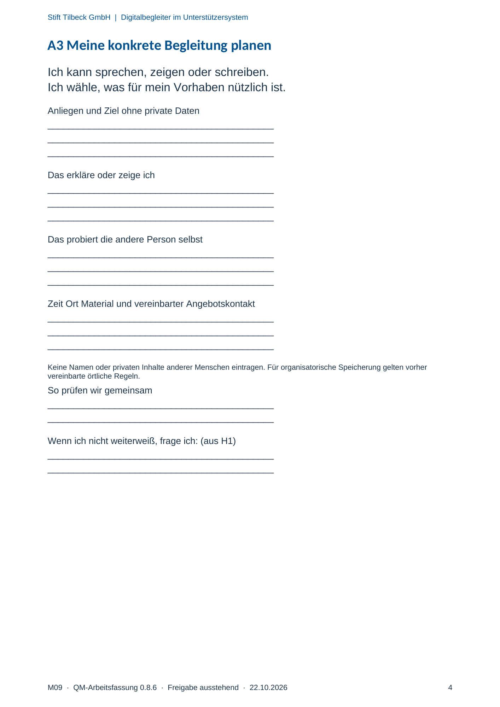

M09 · Originalseite 4
Meine konkrete Begleitung planen
Gezielte Original-Druckauswahl.
Fragen und Ankreuzfelder werden auf dem Ausdruck bearbeitet. Die Lesefassung speichert keine Antworten.
Lesefassung · Seite 4
Stift Tilbeck GmbH | Digitalbegleiter im Unterstützersystem
M09 · QM-Arbeitsfassung 0.8.6 · Freigabe ausstehend · 22.10.2026 4
A3 Meine konkrete Begleitung planen
Ich kann sprechen, zeigen oder schreiben.
Ich wähle, was für mein Vorhaben nützlich ist.
Anliegen und Ziel ohne private Daten
Antwortbereich auf dem Ausdruck
Das erkläre oder zeige ich
Antwortbereich auf dem Ausdruck
Das probiert die andere Person selbst
Antwortbereich auf dem Ausdruck
Zeit Ort Material und vereinbarter Angebotskontakt
Antwortbereich auf dem Ausdruck
Keine Namen oder privaten Inhalte anderer Menschen eintragen. Für organisatorische Speicherung gelten vorher
vereinbarte örtliche Regeln.
So prüfen wir gemeinsam
Antwortbereich auf dem Ausdruck
Wenn ich nicht weiterweiß, frage ich: (aus H1)
Antwortbereich auf dem Ausdruck
Originalseite ansehen
